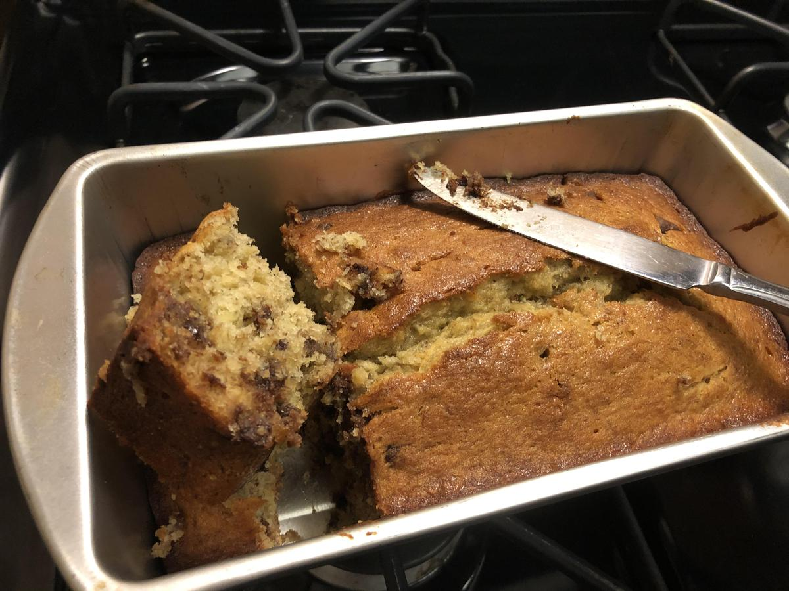

Source: Joy of Cooking 75th edition, page 628. Banana Bread Cockaigne (Note: removed the lemon zest from the recipe)
Personal rating: 4 / 5

1.5 cups Flour
1.5 tsp baking powder
1/2 tsp salt
2/3 cup sugar
6 Tbsp butter, softened
1-2 large eggs, beaten
1-1.25 cups mashed ripe bananas (about 3 medium or 2 large bananas)
1/2 cup chocolate chips
1/2 cup chopped walnuts (optional)
1/4 cup finely chopped dried apricots (optional)
etc (optional)